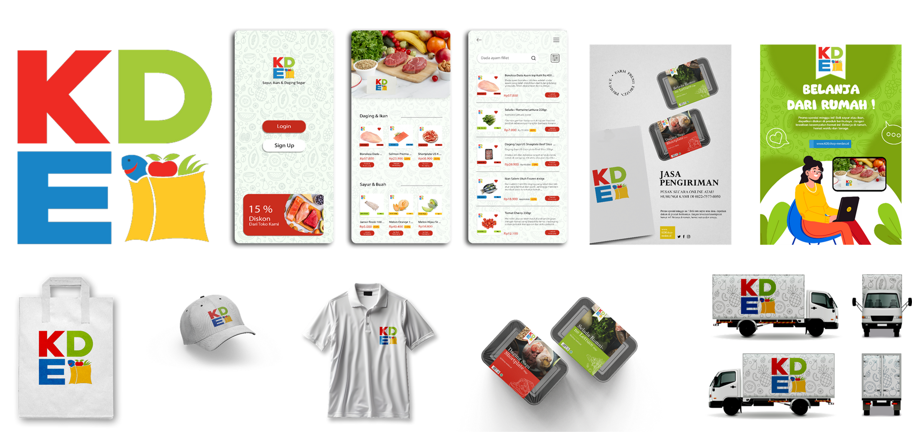

Branding E-Commerce KDE
Project Mata Kuliah Studio Desain Komunikasi Visual 3 (Branding Perusahaan), Disini saya membranding perusahaan Kedai Sampah yang saya buat sendiri dengan nama KDE. Pembuatan di mulai dari Merancang sketsa alternatif logo, digitalisasi logo, hingga membuat produksi konten untuk sosial media dan tampilan UI Aplikasi android